Ayrıca Formül'ün bir üst versiyonu;'function(fonksiyon)'lar da kullanıbilir.
Excel = operatörünü gördüğünü anda aritmetik işlem yapmaya başlar.
Image'ler hücrenin içerisine koyulamazlar sadece dosyanın üzerine yapıştırılırlar.
CMD ya da CTRL + yön tuşları ile matriksin içerisinde hızlı navigasyon yapılabilir. Scroll ederek yön bulmak kullanışsızdır.
Seçim yapmak için ise 'CMD, CTRL + Shift + Arrows' yaparız.
Aritmetik işlemleri her zaman hücre referansı vererek yapmalıyız. Çünkü hücrelerin içerisindeki veriler her zaman değiştirilebilirler.
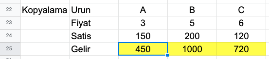Yukarıda hücrenin sağ altında görünen mavi noktaya basılı tutatarak sağdaki hücrelere doğru sürüklediğimizde o hücredeki işlem sağdaki hücrelere de kopyalanmış olur. Fakat kendi üstlerinde hücreler için işlem yaparlar. Bu özellik Excel'in bel kemiğidir.
Hücrelerde tanımlanmış veri formatları vardır. Yapılacak işe göre hangi tipte verinin hücrede tutulacağını temsil eder. Genelde varsayılan olarak General ya da Number tanımlı gelir. Formatlara dikkat edilmezse hatalı veri üretilebilir. Örneğin Date formatındayken KDV hesabı yapmaya kalkışırsak alakasız bir veri üretilir. Bunu seçmek için hücreye sağ tıklayarak Format Cells sekmesine ulaşılır.
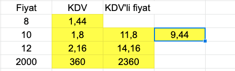Hücrelerin direkt kendilerini üzerine basılı tutarak sürüklediğimizde taşıyabiliriz. Taşınacak olan hücre içerisinde formül, veri vs. ile taşındığı konuma yerleştirilir.
Yukarıdaki görselde görülen formülü onun altındaki ve sağındaki hücreler için yapmak istediğimizde sadece sürükle bırak yöntemi yeterli değildir. Çünkü görüldüğü üzere KDV oranı bilgisi sadece tek bir hücrede yer almakta. Dolayısıyla diğer hücreler içinde bizim bu veriyi sadece o hücreden yani tek bir hücreden almamız gerekiyor. Bunun çözümünü aşağıdaki görselden inceleyebilirsiz:
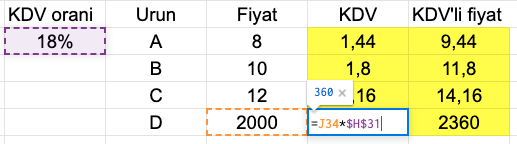Görüldüğü üzere kesik kesik işaretlenmiş olan hücreler o hücre için işlem yapılmakta olan hücreleri işaret etmekte. Yani seçilen en son hücre de KDV oranını aynı hücreden alıyor. Bunu sağlamak için $ işareti ile sütun ve satırı çıpaladık. Eğer $H31 şeklinde yazmımş olsaydık sadece sütunu çıpalamış olurduk. Fakat $H$31 şeklinde yazarak hem sütunu hem de satırı çıpalamış olduk. Bu işleme hücreyi absolute - sabitlemek denir.
Böylece yukarıda yaptığımız işlemle formül oluşturmuş olduk.Yukarıda Nike'ın çeyreklik sezon satışları yazılı. Bu rakamlara göre bir grafik çıktısı alarak gidişatın nereye doğru olduğunu gözlemlemek mümkün oluyor. Yani grafiklerin rakamları okumayı kolaylaştımak gibi bir avantajları var.
Excel bu grafiği oluşturmak için ilgili hücrelerin tamamı seçilir ve insert menüsünden istenilen tarzdaki grafiğe tıklanır. Bunun sonucunda dosyaya taşınabilir bir grafik getirilir.
Tabiki bu grafikleri üzerlerine bazı matematiksel formülleri ekleyerek daha detaylı hale getirebiliyoruz. Örneğin doğrunun denklemini ve r karesini ekranda gösterebiliriz. Bunu grafikteki çizgilere sağ tıklayıp 'add trendline' seçeneğinden 'Display Equation on char' ve 'Display R-squared value on chart' seçenekleri işaretleyerek yapabiliriz. Bunu yaptığımız takdirde aşağıdaki sonuca ulaşırız:
Aşağıda görüldüğü gibi grafiğin sağ üstünde yukarıda istediğimiz verilere ulaşmış olduk. Formül bile şu bilgiyi veriyor: Satışlar 3.8 milyar dolardan başlar ve her çeğrekte 0.13 artar. Kısaca bu formül, elimideki veriye en uyumlu olan doğruyu bulmamızı sağladı. Bu bize basitçe grafiğin geleceği hakkında kafadan atarak tahmin etmeye nazaran daha isabetli bir tahmin üretme konusunda yardımcı olacak. Mesela bu grafikteki en son sezon satışına 0.13 eklersek muhtemelen bir sonraki sezonun satış rakamını tutturmuş olacağız. Fakat bu sadece işin matematiği bunun dışında bir çok faktör bulunmakta şirketin yapısı, içinde çaışanlar, yönetenler, dış dünyada olan şeyler bu satışları gayet net etkileyebilir. Mesela Covid-19'un satışları olumsuz etkileceğini bu grafikle öngöremeyiz.
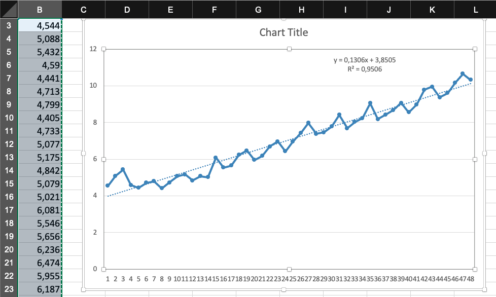Daha önceden öğrendiğimiz gibi hücrenin sağ altındaki noktadan istenilen yöne doğru çekildiğinde seçili olan hücrelerin üzerindeki işlem seçilen yeni hücreler için de devam eder. Fakat bunu eğer değiştirilmezse varsayılan olarak yalnızca doğrusal regresyonda yapar. Dolayısıyla yukarıdaki grafiktek işlemde uygulanan formül tekrar uygulanarak gelecek sezonların satış tahminleri yapıldı. Fakat sezondan sezona farklılık göstereceğinden mesela sohbahar sezonunda satışlar tahmin edilenin altında olabileceğinden ancak 0.13 ile çarpımın %90 -%95 civarında gerçekleşebileceğini öngörerek daha gerçekçi bir sonuç elde edebiliriz. Örneğin; =(B50+0,13)*0,95.
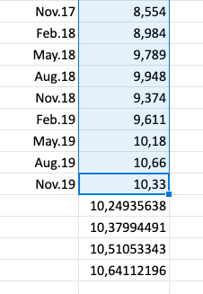=SUM(hücre:hücre) şeklinde yazarak toplama işlemini rahatça yapabiliyoruz. ':' işareti seçilen hücreler dahil aralarında kalanları seçer.
Ayrıca yukarıdaki görselde formülü yazdığımız yerin hemen solunda kalan formül çubuğuna tıklayarak seçili hücredeki formülün nasıl kullanılacağını gösterek bir sekme açılır. Eğer bir formülün veya fonksiyonun nasıl kullanılacağından emin değilsek ya da unuttuysak bu şekilde yardım alabiliriz.
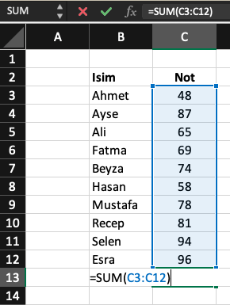=AVERAGE(hücre:hücre)
Fonksiyon kullanmak bize dinamik bir hesaplama yapma imkanı veriyor. Veriler her zaman değişebilir, işlem yaptığımız listeye eklemeler veya çıkarmalar yapılabilir. Fonksiyonlar bu değişikliklerle tek tek uğraşmadan otomatik olarak değişiklik yapıldığı anda sonuca yansımasını sağlarlar.
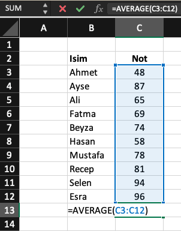Diyelimki sürekli olarak aynı hücrelerle çalışıyoruz. Bu durumda o hücrelerin kapladığı alanın tamamını seçerek o alana bir isim atayabiliriz. Böylelikle biz ne zaman bu ismi bir fonksiyon ya da formülle anarsak Excel anlarki biz o alan üzerinde işlem yapmak istiyoruz.
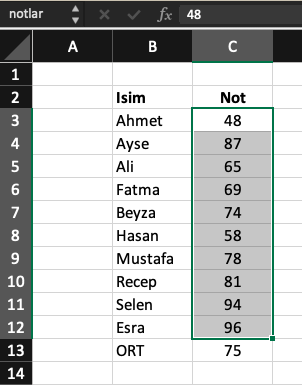Bunu yapabilmek için isimlendirmek istediğimiz hücreleri seçip yukarıdaki görsellerin en üst solunda yazan SUM yazılı olan yere tıklayıp istediğimiz ismi girmemiz yeterlidir.
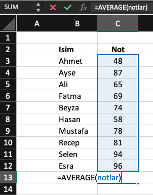Programlamada bu işlem genelde if/else blokları ile yapılır. Aslında Excel'de bir kodlama dilidir ve aynı işlem yapılabilir. Fakat burada hücrelerle yani aslında görsel bişeylerle uğraştığımız için sadece biçimlendirmelerle de istediğimizi alabiliriz. Örneğin aşağıdaki görselde notu 65'ten düşük olanları kırmızı ile işaretledik.
Bunu yapmak için listenin tamamını seçiyoruz,Home > 'Conditional Formatting' > 'Highlight Formatting' > 'Less Than' > bu noktada 65 yazılı olan hücreyi seçipi OK'a tıklıyoruz.
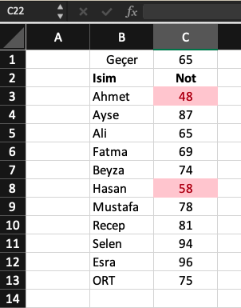Conditional Formatting'in görsellik açısından zenginleştirici özellikleri vardır. Mesela yukarıdaki listeyi aşağıdaki hale getirebiliriz. Bu trafik ışıkları efekti verir, en yüksek yeşil ve en düşük kırmızı renge boyanır. Arada kalanlarda turuncu sarı tonlarında olur. Bunun gibi ya da çok daha farklı bir çok format bulunmakta.
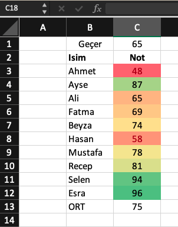Yukarıdaki işlemi if/else kullanarak yapıyoruz:
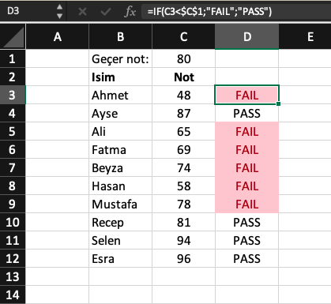Geçme notunu çapalıyoruz. Seçtiğimiz hücreyi çapaladığımızla karşılaştırıyoruz. Sonuç true ise 'FAIL' false ise 'PASS' yazıyor. Sonuç listesinide Highlight edip Conditional Formatting ile 'FALSE' olanları kırmızıya boyuyoruz.